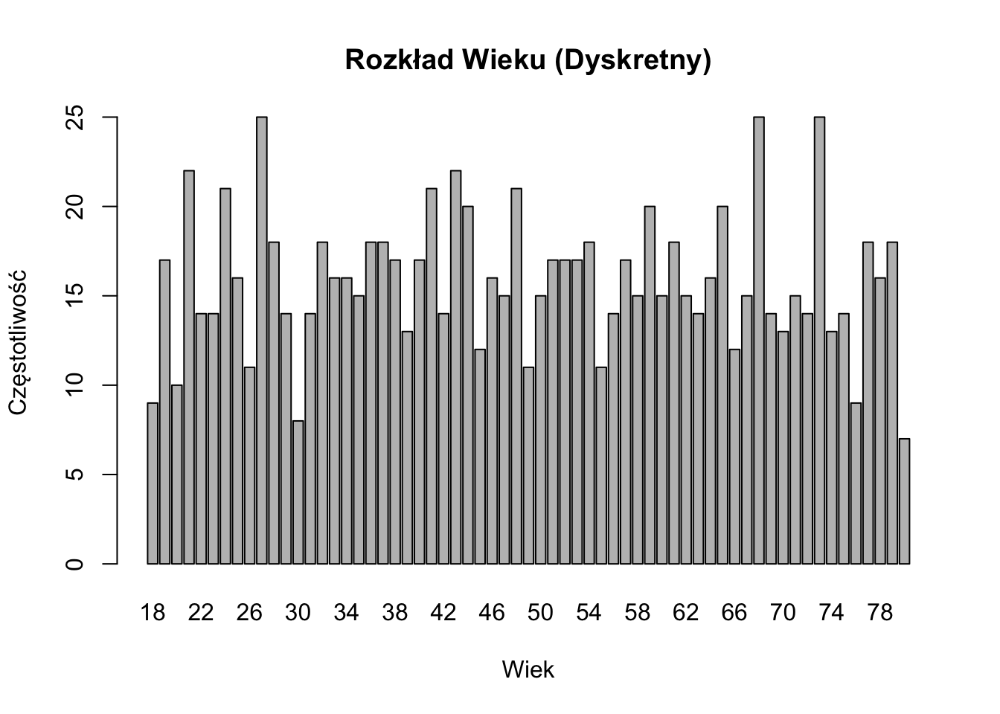

W badaniach nauk społecznych zrozumienie natury naszych danych jest kluczowe dla wyboru odpowiednich metod analizy i wyciągania prawidłowych wniosków. Ten rozdział bada fundamentalne koncepcje typów danych, zaczynając od podstawowej teorii zbiorów matematycznych i przechodząc do praktycznych zastosowań w badaniach nauk społecznych.
4.1 Zbiory liczbowe
Zanim zagłębimy się w typy danych, istotne jest zrozumienie podstawowych zbiorów liczbowych, które tworzą fundament naszego rozumienia danych.
4.1.1 Podstawowe Zbiory Liczbowe
Liczby Naturalne (ℕ): Liczby do liczenia {1, 2, 3, …}
Liczby Całkowite (ℤ): Obejmują liczby naturalne, ich przeciwne i zero {…, -2, -1, 0, 1, 2, …}
Liczby Wymierne (ℚ): Liczby, które można wyrazić jako iloraz dwóch liczb całkowitych
Liczby Rzeczywiste (ℝ): Wszystkie liczby na osi liczbowej, włączając wymierne i niewymierne
4.1.2 Właściwości Zbiorów
Zbiory Przeliczalne: Zbiory, których elementy można ustawić w odpowiedniości jeden-do-jednego z liczbami naturalnymi. Na przykład, zbiór liczb całkowitych jest przeliczalny.
Zbiory Nieprzeliczalne: Zbiory, które nie są przeliczalne. Zbiór liczb rzeczywistych jest nieprzeliczalny.
Zbiory Dyskretne: Zbiory, w których każdy element jest oddzielony od innych elementów skończoną przerwą. Liczby całkowite tworzą zbiór dyskretny.
Zbiory Gęste: Zbiory, w których między dowolnymi dwoma elementami zawsze znajduje się inny element tego zbioru. Liczby wymierne i rzeczywiste są zbiorami gęstymi.
Note
Zrozumienie tych właściwości zbiorów jest kluczowe dla uchwycenia natury różnych typów danych w naukach społecznych.
4.2 Dane Dyskretne vs. Dane Ciągłe
W nauce o danych i statystyce często kategoryzujemy zmienne jako dyskretne lub ciągłe. Jednak to rozróżnienie nie zawsze jest jednoznaczne, a niektóre zmienne wykazują cechy obu typów. Ten dokument omawia koncepcje danych dyskretnych i ciągłych, ich różnice oraz interesujący przypadek zmiennych, które mogą być traktowane jako oba typy.
4.2.1 Dane dyskretne
Dane dyskretne mogą przyjmować tylko konkretne, policzalne wartości. Te wartości często (ale nie zawsze) są liczbami całkowitymi.
4.2.1.1 Cechy danych dyskretnych:
Policzalne
Często reprezentowane przez liczby całkowite
Mogą być skończone lub nieskończone
Brak wartości pomiędzy dwoma sąsiednimi punktami danych
4.2.1.2 Przykłady:
Liczba studentów w klasie
Liczba samochodów sprzedanych przez salon
Rozmiary butów
4.2.2 Dane ciągłe
Dane ciągłe mogą przyjmować dowolną wartość w danym zakresie, włącznie z wartościami ułamkowymi i dziesiętnymi.
4.2.2.1 Cechy danych ciągłych:
Niepoliczalne
Mogą być mierzone z dowolną precyzją
Reprezentowane przez liczby rzeczywiste
Zawsze istnieją wartości pomiędzy dowolnymi dwoma punktami danych
4.2.2.2 Przykłady:
Wzrost
Waga
Temperatura
4.2.3 Spektrum dyskretno-ciągłe
W praktyce niektóre zmienne, które matematycznie są dyskretne, często traktuje się tak, jakby były ciągłe. Ta podwójna natura zapewnia elastyczność w analizie i interpretacji tych zmiennych.
4.2.3.1 Powody traktowania danych dyskretnych jako ciągłych:
Gęsta granularność
Gdy zmienna dyskretna ma dużą liczbę możliwych wartości w danym zakresie, może przybliżać ciągłość.
Przykład: Dochód mierzony w pojedynczych złotych. Chociaż technicznie jest dyskretny (nie można zarobić ułamka grosza), duża liczba możliwych wartości sprawia, że zachowuje się podobnie do zmiennej ciągłej.
Wygoda analityczna
Metody ciągłe często dają rozsądne i użyteczne wyniki nawet dla gęstych zmiennych dyskretnych.
Często łatwiej jest używać istniejących narzędzi statystycznych, jeśli założymy ciągłość, ponieważ pozwala to na stosowanie metod opartych na rachunku różniczkowym.
Przybliżenie zjawisk bazowych
W niektórych przypadkach dyskretny pomiar może być przybliżeniem ciągłego procesu bazowego.
Przykład: Chociaż mierzymy czas w dyskretnych jednostkach (sekundy, minuty, godziny), sam czas jest ciągły.
4.2.3.2 Przykłady zmiennych o podwójnej naturze dyskretno-ciągłej:
Wiek
Dyskretny: Zazwyczaj mierzony w pełnych latach
Ciągły: Może być traktowany jako zmienna ciągła w wielu analizach, szczególnie przy dużych populacjach
Cena
Dyskretna: Ceny są często zaokrąglane do najbliższego grosza
Ciągła: W modelach ekonomicznych ceny często traktuje się jako zmienne ciągłe
Wyniki testów
Dyskretne: Często podawane jako liczby całkowite
Ciągłe: W analizach statystycznych wyniki testów mogą być traktowane jako ciągłe, szczególnie gdy zakres możliwych wyników jest duży
4.2.4 Implikacje dla analizy danych
Możliwość traktowania niektórych zmiennych jako dyskretnych lub ciągłych ma ważne implikacje dla analizy danych:
Elastyczność w modelowaniu: Pozwala na zastosowanie szerszego zakresu technik statystycznych.
Uproszczone obliczenia: Traktowanie gęstych danych dyskretnych jako ciągłych może uprościć obliczenia i uczynić niektóre analizy bardziej możliwymi do przeprowadzenia.
Lepsza interpretacja: W niektórych przypadkach traktowanie danych dyskretnych jako ciągłych może prowadzić do bardziej intuicyjnej lub użytecznej interpretacji wyników.
Potencjalne błędy: Ważne jest, aby być świadomym, kiedy to przybliżenie jest odpowiednie, a kiedy może prowadzić do mylących wyników.
4.2.5 Podsumowanie
Zrozumienie natury zmiennych jako dyskretnych lub ciągłych jest kluczowe w nauce o danych i statystyce. Równie ważne jest jednak rozpoznanie, że to rozróżnienie nie zawsze jest sztywne. Możliwość traktowania niektórych zmiennych jako dyskretnych lub ciągłych, w zależności od kontekstu i potrzeb analitycznych, stanowi potężne narzędzie w arsenale naukowca danych. Jak w przypadku wszystkich decyzji analitycznych, wybór traktowania zmiennej jako dyskretnej lub ciągłej powinien być dokonywany z rozwagą, biorąc pod uwagę naturę danych, cele analizy i potencjalne implikacje tego wyboru.
4.2.6 Przykład kodu R
Oto prosty przykład kodu R ilustrujący, jak możemy analizować zmienną (wiek) zarówno jako dyskretną, jak i ciągłą:
# Generowanie przykładowych danych wiekuset.seed(123)wiek <-round(runif(1000, min =18, max =80))# Traktowanie wieku jako dyskretnegotabela_wieku <-table(wiek)barplot(tabela_wieku, main ="Rozkład wieku (dyskretny)", xlab ="Wiek", ylab ="Częstość")

# Traktowanie wieku jako ciągłegohist(wiek, main ="Rozkład wieku (ciągły)", xlab ="Wiek", ylab ="Częstość")
# Porównanie średniej i medianycat("Średni wiek:", mean(wiek), "\n")
Średni wiek: 48.848
cat("Mediana wieku:", median(wiek), "\n")
Mediana wieku: 48
# Regresja liniowa (traktowanie wieku jako ciągłego)dochod <-20000+500* wiek +rnorm(1000, 0, 5000)model <-lm(dochod ~ wiek)summary(model)
Call:
lm(formula = dochod ~ wiek)
Residuals:
Min 1Q Median 3Q Max
-14214.7 -3504.0 66.3 3280.8 17032.3
Coefficients:
Estimate Std. Error t value Pr(>|t|)
(Intercept) 20286.728 462.218 43.89 <2e-16 ***
wiek 495.352 8.889 55.72 <2e-16 ***
---
Signif. codes: 0 '***' 0.001 '**' 0.01 '*' 0.05 '.' 0.1 ' ' 1
Residual standard error: 5009 on 998 degrees of freedom
Multiple R-squared: 0.7568, Adjusted R-squared: 0.7565
F-statistic: 3105 on 1 and 998 DF, p-value: < 2.2e-16
# Wykres linii regresjiplot(wiek, dochod, main ="Dochód vs. Wiek", xlab ="Wiek", ylab ="Dochód")abline(model, col ="red")
Ten przykład pokazuje, jak możemy analizować dane dotyczące wieku zarówno dyskretnie (używając wykresu słupkowego), jak i w sposób ciągły (używając histogramu i regresji liniowej). Wybór między tymi podejściami zależałby od konkretnego pytania badawczego i wymaganego poziomu precyzji w analizie.
4.3 Wprowadzenie do Typologii Danych Stevensa
S. S. Stevens, amerykański psycholog, wprowadził system klasyfikacji skal pomiarowych w swoim artykule z 1946 roku “On the Theory of Scales of Measurement”. Ten system, znany jako typologia danych Stevensa lub poziomy pomiaru, stał się fundamentalny dla zrozumienia, jak różne typy danych powinny być analizowane i interpretowane.
Stevens zaproponował cztery poziomy pomiaru:
Nominalny
Porządkowy
Interwałowy
Ilorazowy
Każdy poziom ma specyficzne właściwości i pozwala na różne rodzaje operacji statystycznych i analiz.
4.3.1 Skala Nominalna
4.3.1.1 Definicja
Skala nominalna jest najbardziej podstawowym poziomem pomiaru. Używa etykiet lub kategorii do klasyfikacji danych bez żadnej wartości ilościowej ani porządku.
4.3.1.2 Właściwości
Kategorie są wzajemnie wykluczające się
Brak inherentnego porządku między kategoriami
Nie można wykonywać znaczących operacji arytmetycznych
Skala ilorazowa jest najwyższym poziomem pomiaru. Ma wszystkie właściwości skali interwałowej plus prawdziwy punkt zerowy, co sprawia, że stosunki między wartościami są znaczące.
Zrozumienie typologii danych Stevensa jest kluczowe z kilku powodów:
Wybór odpowiednich testów statystycznych: Poziom pomiaru determinuje, które analizy statystyczne są odpowiednie dla danego zbioru danych.
Interpretacja wyników: Znaczenie wyników statystycznych zależy od poziomu pomiaru zaangażowanych zmiennych.
Projektowanie narzędzi pomiarowych: Przy tworzeniu ankiet lub innych narzędzi pomiarowych badacze muszą wziąć pod uwagę poziom pomiaru, który chcą osiągnąć.
Transformacja danych: Czasami dane mogą być przekształcane z jednego poziomu na drugi, ale musi to być robione ostrożnie, aby uniknąć błędnej interpretacji.
4.3.6 Kontrowersje i Ograniczenia
Chociaż typologia Stevensa jest szeroko stosowana, spotkała się z pewnymi krytykami:
Sztywność: Niektórzy twierdzą, że typologia jest zbyt sztywna i że wiele rzeczywistych pomiarów mieści się pomiędzy tymi kategoriami.
Traktowanie danych porządkowych: Trwa debata na temat tego, kiedy właściwe jest traktowanie danych porządkowych jako interwałowych dla pewnych analiz.
Skalowanie psychologiczne: Niektóre konstrukty psychologiczne (jak inteligencja) są trudne do jednoznacznego skategoryzowania w ramach tego systemu.
4.3.7 Podsumowanie
Typologia danych Stevensa dostarcza fundamentalnych ram dla zrozumienia różnych rodzajów danych i ich właściwości. Rozpoznając poziom pomiaru swoich zmiennych, badacze mogą podejmować świadome decyzje dotyczące gromadzenia danych, analizy i interpretacji. Jednak ważne jest, aby pamiętać, że chociaż ta typologia jest użytecznym przewodnikiem, rzeczywiste dane często wymagają niuansowego podejścia i nie zawsze pasują idealnie do tych kategorii.
pH as an Interval Scale
pH is considered an interval scale because:
It has ordered categories: Lower pH values indicate higher acidity, while higher values indicate higher alkalinity.
The intervals between adjacent pH values are equal in terms of hydrogen ion concentration:
Each whole number change in pH represents a tenfold change in hydrogen ion concentration.
For example, the difference in acidity between pH 4 and pH 5 is the same as the difference between pH 7 and pH 8.
It lacks a true zero point:
pH 0 does not represent a complete absence of hydrogen ions.
Negative pH values and values above 14 are possible in extreme conditions.
Ratios are not meaningful:
A pH of 4 is not “twice as acidic” as a pH of 2.
The ratio of hydrogen ion concentrations, not pH values, indicates relative acidity.
These characteristics align with the definition of an interval scale, where the differences between values are meaningful and consistent, but ratios are not interpretable.
4.4 Skale Likerta i Ich Charakter Porządkowy
4.4.1 Wprowadzenie do Skal Likerta
Skale Likerta są szeroko stosowane w psychologii i naukach społecznych do pomiaru postaw, opinii i percepcji. Nazwane na cześć psychologa Rensisa Likerta, skale te zazwyczaj składają się z serii stwierdzeń lub pytań, które respondenci oceniają na skali, często od “Zdecydowanie się nie zgadzam” do “Zdecydowanie się zgadzam”.
4.4.2 Dlaczego Skale Likerta są Zmiennymi Porządkowymi
Skale Likerta są uważane za zmienne porządkowe z kilku powodów:
Porządek bez równych odstępów: Chociaż odpowiedzi mają wyraźną kolejność (np. “Zdecydowanie się nie zgadzam” < “Nie zgadzam się” < “Neutralnie” < “Zgadzam się” < “Zdecydowanie się zgadzam”), odstępy między tymi kategoriami niekoniecznie są równe.
Subiektywna interpretacja: Różnica między “Zdecydowanie się nie zgadzam” a “Nie zgadzam się” może nie być taka sama jak różnica między “Zgadzam się” a “Zdecydowanie się zgadzam” dla wszystkich respondentów.
Brak prawdziwego punktu zerowego: Skale Likerta zazwyczaj nie mają prawdziwego punktu zerowego, co jest cechą charakterystyczną skal interwałowych lub ilorazowych.
Zilustrujmy to przykładem w R:
# Tworzymy zmienną typu factor reprezentującą odpowiedzi w skali Likertaodpowiedzi_likert <-factor(c("Zdecydowanie się nie zgadzam", "Nie zgadzam się", "Neutralnie", "Zgadzam się", "Zdecydowanie się zgadzam"),ordered =TRUE,levels =c("Zdecydowanie się nie zgadzam", "Nie zgadzam się", "Neutralnie", "Zgadzam się", "Zdecydowanie się zgadzam"))# Wyświetlamy poziomy, aby pokazać uporządkowanieprint(levels(odpowiedzi_likert))
[1] "Zdecydowanie się nie zgadzam" "Nie zgadzam się"
[3] "Neutralnie" "Zgadzam się"
[5] "Zdecydowanie się zgadzam"
# Próba obliczenia średniej (co jest niewłaściwe dla danych porządkowych)odpowiedzi_numeryczne <-as.numeric(odpowiedzi_likert)print(mean(odpowiedzi_numeryczne))
[1] 3
Jak widzimy, chociaż możemy uporządkować odpowiedzi, traktowanie ich jako dane numeryczne i obliczanie średniej nie dostarcza znaczących informacji ze względu na porządkowy charakter danych.
4.5 IQ i Inne Zmienne Psychologiczne jako Miary Porządkowe
4.5.1 Przykłady Zmiennych Psychologicznych
Wiele miar psychologicznych, w tym IQ, jest często traktowanych jako skale interwałowe, ale w rzeczywistości są to skale porządkowe. Oto dlaczego:
Wyniki IQ:
Chociaż wyniki IQ są przedstawiane jako liczby, różnica między IQ 100 a 110 może nie reprezentować takiej samej różnicy poznawczej jak między 130 a 140.
Skala jest normalizowana i dostosowywana w czasie, co utrudnia stwierdzenie, że ma właściwości prawdziwie interwałowe.
Inne Miary Psychologiczne:
Skale depresji (np. Inwentarz Depresji Becka)
Miary lęku (np. Inwentarz Stanu i Cechy Lęku)
Oceny osobowości (np. Inwentarz Wielkiej Piątki)
Te miary często wykorzystują sumowane pozycje typu Likerta lub inne metody punktacji, które nie gwarantują równych odstępów między wynikami.
# Wykres rozkładubarplot(table(kategorie_depresji), main ="Rozkład Nasilenia Depresji",xlab ="Kategoria Nasilenia",ylab ="Częstość")
Chociaż możemy uporządkować te kategorie, nie możemy założyć, że różnica między “Minimalna” a “Łagodna” jest taka sama jak między “Umiarkowana” a “Ciężka” w odniesieniu do bazowego konstruktu depresji.
4.5.3 Implikacje dla Analizy
Uznanie tych miar za porządkowe ma ważne implikacje dla analizy danych:
Odpowiednie testy statystyczne: Używaj testów nieparametrycznych (np. test U Manna-Whitneya, test Kruskala-Wallisa) zamiast parametrycznych.
Analiza korelacji: Używaj korelacji rangowej Spearmana zamiast korelacji Pearsona.
Tendencja centralna: Raportuj medianę i dominantę zamiast średniej.
Wizualizacja danych: Stosuj metody odpowiednie dla danych porządkowych, takie jak wykresy słupkowe lub skumulowane wykresy słupkowe.
4.5.4 Podsumowanie
Chociaż skale Likerta i wiele miar psychologicznych jest często traktowanych jako dane interwałowe ze względów praktycznych, ważne jest, aby pamiętać o ich porządkowym charakterze. To zrozumienie powinno wpływać na nasz wybór analiz statystycznych i interpretację wyników w badaniach psychologicznych.
Ćwiczenie: Identyfikacja Skal Pomiarowych
Dla każdej z poniższych zmiennych określ najbardziej odpowiednią skalę pomiaru (Nominalna, Porządkowa, Przedziałowa lub Stosunkowa). W pliku z zadaniem podaj swoje odpowiedzi wraz z uzasadnieniem.
Liczba dzieci w rodzinie: 1 dziecko, 2 dzieci, 3 dzieci, …